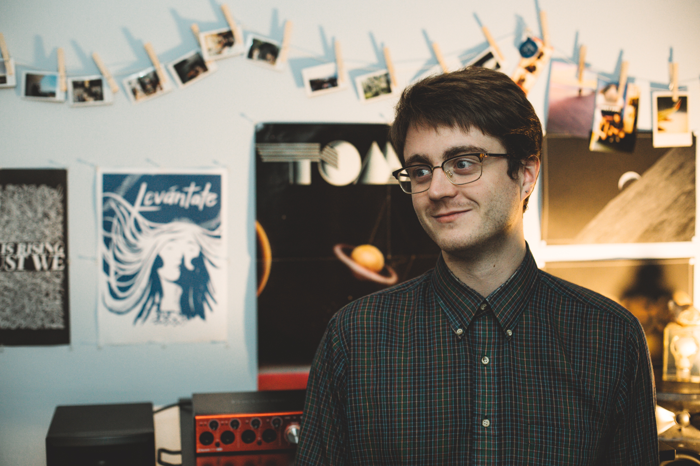

<!DOCTYPE html>
<html lang="en-US">

<head>
	<title>Avery</title>
	<meta name="viewport" content="width=device-width, initial-scale=1.0">
	<meta name="description" content="Avery's Portfolio">
	<link rel="shortcut icon" href="/AveryBickLogo.jpg" id="favicon">
	<link href="./css/style.css" rel="stylesheet" type="text/css"/>
	<link rel="stylesheet" href="https://fonts.googleapis.com/css?family=Didact+Gothic">
	<link rel="icon" href="./img/AveryBickLogo.jpg">

	<style type="text/css">
	a:link {color:#7dc9f4;}    /* normal link */
	a:visited {color:#7dc9f4;} /* visited link */
	a:hover {color:#50afe5;}   /* mouse over link */
	a:active {color:#fe0000}   /* selected link */
	</style>

</head>

</html>

<body>
<div class="large-column">
	<div class="section" id="bio">
	<h1>About</h1>

	    

	    <br>
		<p>
		Avery is an environmental engineer, data scientist, and multimedia artist living in the Santa Cruz area. He currently works as a research assistant in the Stanford History Department (compiling and visualizing data on historical global waste from mining) and in the Geophysics Departments (modeling the impacts sea level rise on economic inequity). Avery uses data analysis and art to explore and visualize environmental and societal systems.
		<br>
		<br>
		Avery received his B.S. in Environmental Engineering ('14) from the University at Buffalo and his M.S. in Environmental Engineering and Science ('18) from Stanford. While completing his M.S. at Stanford, he served for two years as a teaching and research assistant for the Future Bay Initiative, where he provided modeling and data analysis support for student researchers investigating sea level rise impacts in the San Francisco Bay Area. Research that Avery has led or participated in through Future Bay has been published in Science Advances and Natural Hazards. This experience led to the founding of a startup—HighTide Intelligence—with two Future Bay colleagues focusing on creating actionable sea level rise analyses. He currently serves as a scientific advisor. Avery has previously worked at CH2M in New York City as a wastewater engineer, assisting with the implementation of nitrogen pollution controls in wastewater treatment plants, and as a research assistant in the lab of Dr. Alfred Spormann at Stanford, studying slow-growing dehalogenating bacteria.
		<br>
		<br>
		As Slow Proteo, he has released music through Matron Records in Santa Fe and has performed across the U.S. and Mexico. He has developed and performed several pieces with the Stanford Laptop Orchestra, where he become enthralled with artistic coding and techniques such as audiovisual feedback and granular synthesis. He previously worked in event production at the SUNY Buffalo Center for the Arts.
		<br>
		<br>

		<div class ="contact">
			<h2>Contact</h2>
			<p>Professional: <a href="mailto:i.avery.bick@gmail.com">i.avery.bick@gmail.com</a></p>
			<br>
			<p>Audiovisual: <a href="mailto:slowproteo@gmail.com">slowproteo@gmail.com</a></p>
			<br>
			<br>		
			<a href="https://www.instagram.com/slowproteo/">Instagram</a>
			<br>
			<a href="https://www.linkedin.com/in/ian-avery-bick/">LinkedIn</a>
		</div>

	</div>
</div>

<div class="section bottom-menu"><hr/>
	<p>
		<a href="./index.html">home</a>
		<a href="./about.html">about</a>
		<a href="./environmental.html">environmental</a>
		<a href="./audiovisual.html">audiovisual</a>
	</p><
</div>

</body>